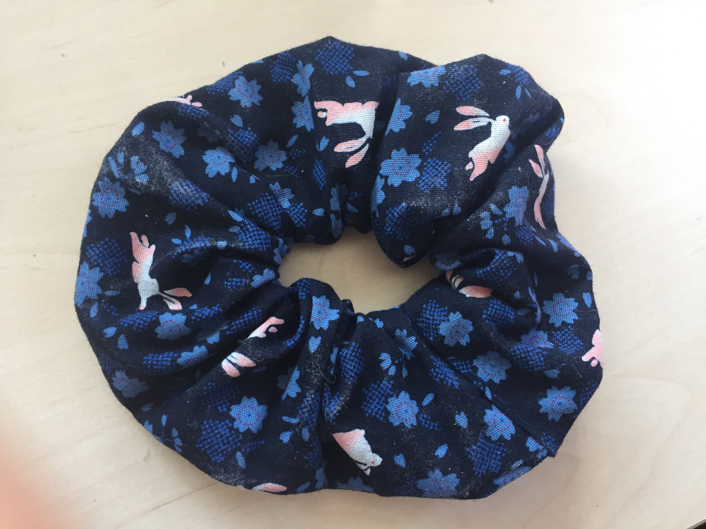
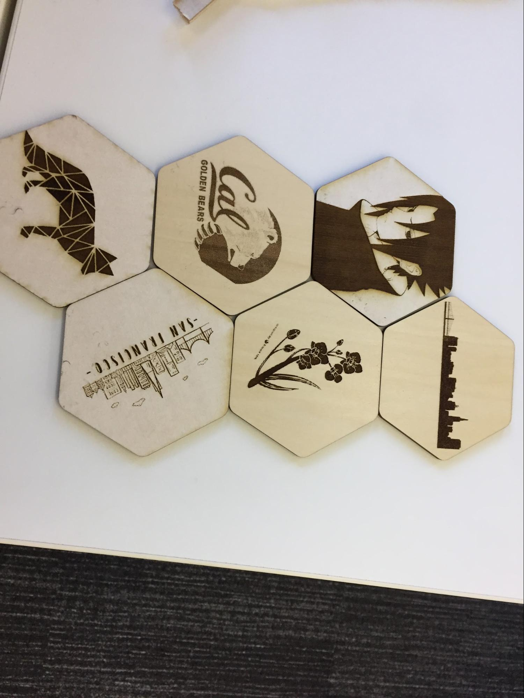
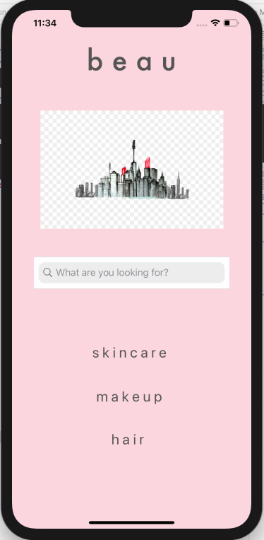

Irene Chang
Welcome to my page!
I study journalism and psychology at Northwestern University.
Currently, I am taking the CS130 Web Development course, through which I'm learning how to build beautiful webpages from scratch!
Featured Projects
Bay Area Immersion ProgramThis winter, I attended the Bay Area Immersion Program as one of 28 students in the Medill-McCormick cohort. During my time on Northwestern's San Francisco campus, I made scrunchies, created my own coasters using a Glowforge laser cutter, and created a broadcast TV show called 'The Intersection'! The Intersection |
 |  |
BeauPrior to the Bay Area program, I designed an app demo of Beau, a beauty app that allows the user to filter for skincare and makeup using crowdsourced recommendations (a "Yelp for the beauty community"). I used Swift, and coded the project with a partner for a journalism class. |
 |
Work Experience
See my complete work history on LinkedIn.
Print Managing Editor
Northwestern Undergraduate Research Journal (NURJ)
July 2019 - present
Manage the print team of 17 students by recruiting and training five new editors, hosting AP style and writing workshops, organizing team bonding and recruitment events and assigning thesis editing tasks to team members.
News Intern
CBS San Francisco Bay Area (KPIX 5)
July 2019 - September 2019
Executed a variety of essential responsibilities during 9-week internship, from conducting interviews and compiling research to covering national stories, working on live shots and helping create packages minutes before they aired.
Key contributions:
- Interviewed key officials such as SF Mayor London Breed, and assisted photographers during historic moments such as the verdict of the Ghost Ship Warehouse, in which over 35 people were killed in a warehouse fire.
- Researched and compiled every court case that KPIX was reporting on or had reported on, labeling hearings, verdicts, etc. from January 2019 until September 2019.
- Assisted investigative producer with multiple projects by researching the use of glyphosate in schools and compiling information on tenant evictions in Oakland, and assisting her in the field.
- Arranged interviews with police department for reporters in the field, and conducted interviews and edited broadcast packages in place of reporters.
- Pitched story ideas every morning to executive producers and news director.
Education
Northwestern University
Evanston, IL
Bachelor of Science in Journalism, Anticipated December 2020
Double Major in Psychology
Master of Science in Journalism, Social Justice and Investigative Reporting concentration
Anticipated January-August 2021